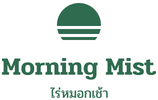

We are the only roaster in Chiang Mai that prints the farmer's name and the altitude on every bag.
For Pim, 29, a freelance illustrator who brews pour-over at home, orders on LINE OA and Instagram, and reads the bag before she reads the price. Route: Field Notes. The bag reads like a labelled specimen from a real farm.

Clear space on every side = the height of the capital M.
Minimum size. Icon 16 px / 5 mm. Primary lockup 120 px / 25 mm wide.
Kit. primary, alternate, icon, black, white; text is outlined, so no font is needed.
Never. stretch, recolor, add effects, or sit the logo on photography without a flat color field.
About 60% cream, 30% green and ink, 10% red. All 17 text and border pairs in tokens.json pass WCAG 2.2 (body text on page is 16.2:1). Print values are approximate; proof before print.
Display and heading
Pridi 600. Warm, serif, looped.
Body, UI, numerals
IBM Plex Sans Thai Looped 400 / 500 / 600. Arabic digits: 0123456789.
Stacking test
ป้ายผู้ใหญ่ ฝั่งฟื้น กรุ๊ปปั๊ม ญุฐู ที่นี่ ๑๒๓ 123
Scale 1.25 from 16 px. Line height: body 1.7, headings 1.3. Thai letter-spacing 0; no Thai italics. Both families are OFL, from Google Fonts.
Taken from the icon. Dividers and image masks, never over text.
4 columns on phone and 12 on wide screens, 24 px margins on phone. Space between groups is at least twice the space within a group. The label block is the second read after the name or the photograph.
ถั่วจากไร่คุณสมศรี สูง 1,350 เมตร คั่วอ่อน กลิ่นลิ้นจี่
Grown at 1,350 m. Roasted light. Read the bag.
Use: farm, altitude, light roast, the farmer's name. Avoid: premium, authentic, artisan.
Show the farmer's name and altitude on every product graphic. Put the logo on a flat color field over photography. Use the cherry red once per piece, for the one thing that matters.
Stretch or recolor the logo. Add a mascot, a bean icon, or kraft-paper texture. Set Thai with letter-spacing or italics.